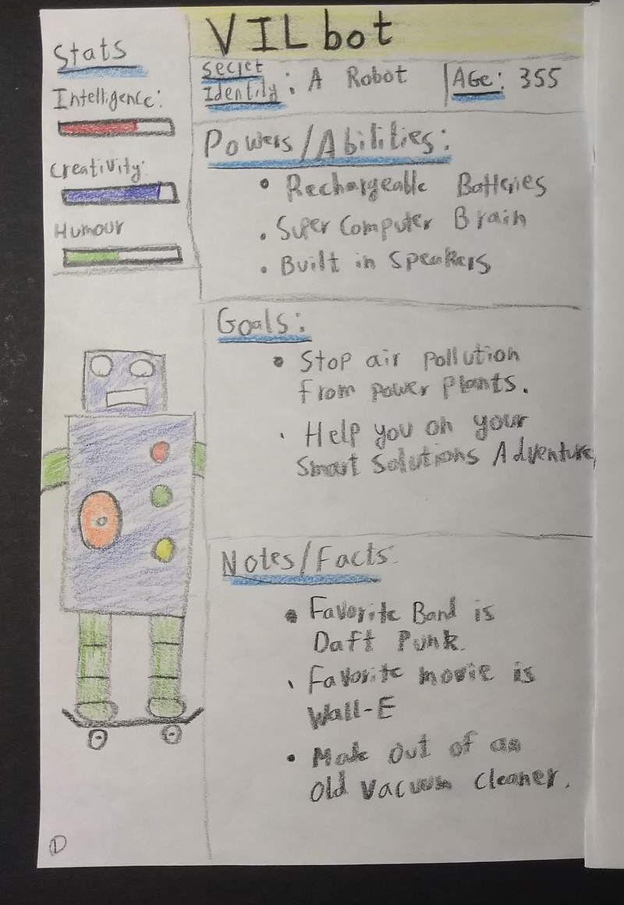

COMICS · LESSON 2 OF 5
Build Your Hero: Biography and Motivation
A list of powers tells us what a hero can do. Their motivation tells us what they will choose to do.
- Time / Tiempo: one class period / un periodo de clase
- You need / Necesitas: your comic and coloring supplies / tu cómic y materiales para colorear
- Today you add / Hoy agregas: Page 1 / Página 1
Learn: details shape decisions
Two heroes can have the same power and use it differently. One protects people because someone once protected them. Another avoids attention because using the power caused trouble before. Biography gives the power a direction.
Words for today: biography · motivation · goal · predict · evidence
Teacher model: Notice how labels make the stats, abilities, facts, and goals easy to find.

Your page can look different. Keep the required information easy to find.
Create Page 1
Open to Page 1. Include:
- superhero name and secret identity;
- a drawing of the hero;
- two or three powers or abilities;
- stats that fit the hero, such as strength, speed, creativity, or humor;
- notes or facts that make the hero specific; and
- one or more goals.
Partner prediction
- Show your partner Page 1.
- Your partner predicts one choice your hero would make during a problem.
- Your partner points to the biography detail that supports the prediction.
- If the prediction does not fit, add or revise one detail so the hero's motivation is clearer.
Exit sentence: "My hero is motivated by ____. We can see that when ____."
Word bank: protect · discover · repair · teach · defend · connect · prevent · guide · investigate · remember
Aprende: los detalles cambian las decisiones
Dos héroes pueden tener el mismo poder y usarlo de maneras diferentes. Uno protege a la gente porque alguien lo protegió antes. Otro evita llamar la atención porque su poder le causó problemas. La biografía le da dirección al poder.
Palabras de hoy: biografía · motivación · meta · predecir · evidencia
Modelo del docente: Fíjate cómo las etiquetas ayudan a encontrar las estadísticas, habilidades, datos y metas.
Tu página puede verse diferente. Haz que la información requerida sea fácil de encontrar.
Crea la Página 1
Abre tu cómic en la Página 1. Incluye:
- el nombre del superhéroe y su identidad secreta;
- un dibujo del héroe;
- dos o tres poderes o habilidades;
- estadísticas que correspondan con el héroe, como fuerza, velocidad, creatividad o humor;
- notas o datos que hagan específico al héroe; y
- una o más metas.
Predicción con un compañero
- Muéstrale la Página 1 a tu compañero.
- Tu compañero predice una decisión que tomaría tu héroe durante un problema.
- Tu compañero señala el detalle de la biografía que apoya la predicción.
- Si la predicción no encaja, agrega o cambia un detalle para aclarar la motivación.
Oración de salida: "Mi héroe está motivado por ____. Podemos verlo cuando ____."
Banco de palabras: proteger · descubrir · reparar · enseñar · defender · conectar · prevenir · guiar · investigar · recordar